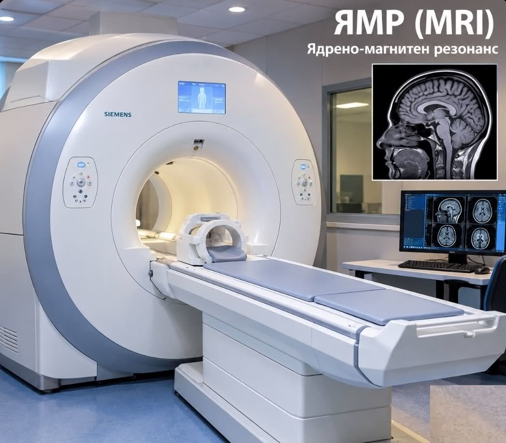
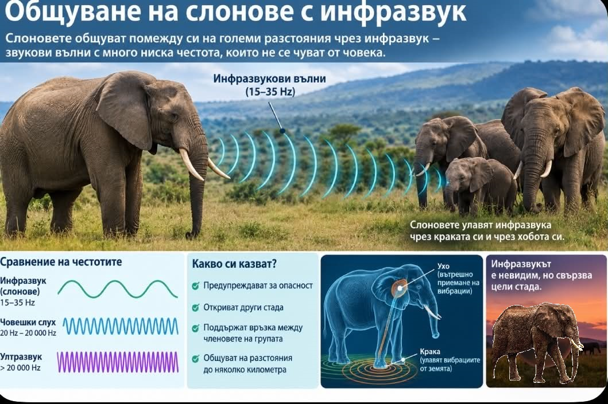
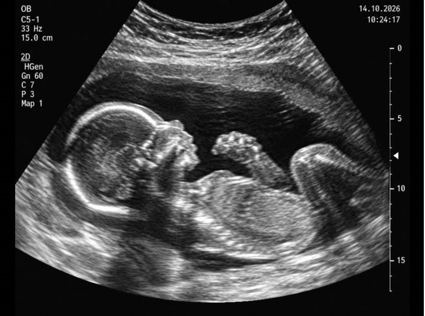
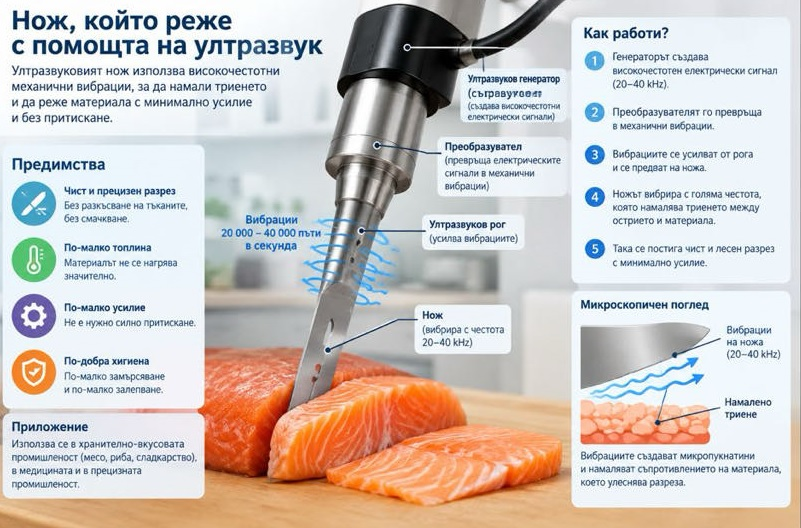

!!! Разгледайте отклонението на махалото от равновесното положение. Другата част на видеото ще разберете по-добре в 9. клас.
Разрушителната сила на резонанса: Мостът в Такома (1940 г.)
Един от най-известните и драматични примери в историята се случва на 7 ноември 1940 г. в САЩ с моста Такома Нароус (Tacoma Narrows Bridge).
• Какво се случва: Ветрове със скорост от около 64 км/ч започват да духат на пресекулки.
Тези пориви на вятъра започват да „бутат“ моста в същия ритъм, в който той има естествена склонност да се усуква и люлее.
• Резултатът: Мостът изпада в силен резонанс.
Огромната бетонна и стоманена конструкция започва да се вълнува и усуква като течна лента, издигайки се на метри нагоре и надолу.
Само няколко часа по-късно мостът не издържа на огромното напрежение и се срутва в реката.
Днес този случай се изучава от всички инженери, за да не се повтаря същата грешка при строежа на съвременни мостове.
.
🔊 Други интересни примери за резонанс
•
🍷 Счупване на чаша с глас: Сигурно сте виждали по филмите как оперен певец взема висока нота и тънка кристална чаша за вино се пръсва.
Това не е магия. Чашата има своя собствена честота на трептене (ако я чукнете леко с нокът, тя издава определен звук).
Ако певецът изпее точно същата нота достатъчно силно, звуковите вълни започват да „бутат“ молекулите на стъклото в техния собствен ритъм.
Чашата изпада в резонанс, започва да трепти твърде силно и се пръсва.
•
📻 Настройване на радиото: Когато въртите копчето на радиото в колата, за да хванете любимата си станция (например на честота 101.6 MHz),
вие всъщност променяте собствената честота на трептене на електроните в антената на вашето радио.
Когато я изравните точно с честотата, на която излъчва предавателят на радиостанцията, възниква електрически резонанс.
Сигналът рязко се засилва и вие чувате чиста музика.
•
👟 Войниците на моста: Когато армия от войници преминава по мост, винаги се дава команда „Свободен ход!“ (да не ходят в маршова стъпка).
Ако стотици войници маршируват перфектно в един и същ такс, техните стъпки могат да съвпаднат с естествения ритъм на трептене на моста.
Мостът ще изпадне в резонанс, ще започне да се люлее силно и може да се срути под краката им (нещо, което се е случвало в историята, например с моста в Анже,
Франция през 1850 г.).
•
🏥 Магнитен резонанс (ЯМР): В медицината лекарите използват този принцип, за да виждат какво има вътре в човешкото тяло без операция.
Огромни магнити карат водородните атоми в тялото ни да изпаднат в резонанс и да излъчат сигнали, от които компютърът сглобява перфектна
триизмерна снимка на органите ни.

.
Суперсилите на инфразвука (Под 20 Hz)
• Тайната социална мрежа на слоновете: Слоновете могат да си комуникират от разстояние над 10 километра!
Те издават много ниски инфразвуци, които пътуват по земята и въздуха.
Другите слонове ги „чуват“ не само с ушите си, но и чрез чувствителните възглавнички на краката си.

.
•
Гласът на разярената Земя: Когато се задава природно бедствие като земетресение, цунами или изригване на вулкан,
Земята генерира мощни инфразвукови вълни. Животни като гълъбите, кучетата и медузите усещат тези вълни много преди нас и затова бягат на безопасно място.
Учените използват специални микрофони, за да улавят тези звуци и да предсказват бедствия.
•
Призраци и обитавани от духове къщи: Случвало ли ти се е да влезеш в някоя стара сграда и изведнъж да настръхнеш или да усетиш безпокойство?
Често виновник за това е инфразвукът! Стари вентилационни тръби или вятърът, преминаващ през коридорите, могат да създадат звук с честота около 19 Hz.
Точно тази честота кара човешката очна ябълка да вибрира леко, което може да причини оптични илюзии („сиви петна“ или „призраци“) и чувство на страх.
🦇 Суперсилите на ултразвука (Над 20 000 Hz)
•
Ехолокация или как да „виждаш“ в тъмното:
Прилепите и делфините са истински нинджи в използването на ултразвук.
Те изпращат ултразвукови сигнали, които се отразяват от плячката (например муха или малка рибка) и се връщат обратно при тях.
Така те съставят перфектна 3D карта на пространството около себе си, дори в пълен мрак.
•
Първата снимка на бебето: В медицината ултразвукът е незаменим.
Тъй като е напълно безопасен (за разлика от рентгена), лекарите го използват, за да „надникнат“ в корема на бременна майка и да видят как расте бебето.
Уредът се нарича ехограф и работи точно като ехолокацията на делфините.

.
•
Звукова пералня за бижута и очила: Ултразвукът може да почиства предмети! Когато се пусне в специална вана с вода,
той създава милиони микроскопични мехурчета, които се пукат с огромна сила.
.
Това буквално „избива“ и най-финия прах от труднодостъпните места на очила, часовници и бижута, без да ги надраска.
•
Рязане без нож: В заводите силен фокусиран ултразвук се използва за рязане на пластмаса и дори за заваряване на метали.
Методът е толкова точен, че се използва дори в хранителната индустрия, за да се режат перфектни парчета торта или сирене, без те да се смачкват.

Назад